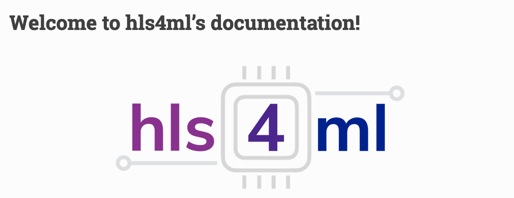

Unsupervised New Physics detection at 40 MHz
In this challenge, you will develop algorithms for detecting New Physics by reformulating the problem as an out-of-distribution detection task.
Armed with four-vectors of the highest-momentum jets, electrons, and muons produced in a LHC collision event, together with the missing transverse energy (missing ET),
the goal is to find a-priori unknown and rare New Physics hidden in a data sample dominated by ordinary Standard Model processes, using anomaly detection approaches.
Real-time event filtering
The algorithms are intended to be deployed in the first stage of the real-time event filter processing system of LHC experiments (Level 1 or L1 trigger), where the available bandwidth, latency and resources are strictly limited.
Such limitations constrain the design of the algorithm. To emulate the constraints in terms of bandwith only the leading 10 jets, 4 muons, 4 electrons and the missing ET will be provided to be used as input to the algorithm.
Furthermore, only a maximum number of bits is available for the representation of the η, φ, and the transverse momentum pT of each physics object.
The effect of such quantization of the inputs can be studied for instance with QKeras (see below).
Further complicating things, is that trigger algorithms must have a very low latency, of around one microsecond, and in addition must be highly resource efficient.
The task is therefore to design an architecture that maximises the sensitivity for New Physics, but at the lowest possible resource and latency cost.
An estimate of the algorithm efficiency can be obtained by calculating the number of floating-point operations of the model (FLOPs).
An example of how to calculate FLOPs is provided here.
FPGA inference with hls4ml
To meet the latency constraint, field-programmable gate arrays (FPGAs) are typically deployed in the L1 trigger farm of LHC experiments.
Algorithm complexity, and possibly accuracy, could be enhanced by deploying deep learning algorithms on these devices.
To do so, the participants can use the hls4ml library (see below), which was introduced as a tool to automatically translate a given DL model
into high-level synthesis (HLS) code describing the electronic circuit.
The HLS code is automatically optimized to achieve the lowest latency and resources for your favourite DL model.
With this tool the user can obtain an estimate of these algorithm performance metrics for a deployment on FPGAs for the L1 trigger.
The participants should aim at achieving the highest true positive rate at a fixed false positive rate of 10-5,
roughly corresponding to the available output data rate budget for a trigger algorithm, at the lowest possible latency and resource utilization.
Do not miss the introduction to the challenge at ML4Jets2021!
Datasets and example code
Links to the data samples are given below. The training dataset contains a cocktail of Standard Model events intended for training and testing.
In addition, we provide four different Beyond Standard Model signals to study the algorithm performance for the New Physics detection task.
Finally, we provide a "blackbox" test sample, containing a mixture of SM and an unknown New Physics signal.
Information on how to upload your contribution based on this sample are provided below.
A full description of the SM and BSM processes considered, the simulation setup, and observables in the dataset can be found in this paper.
As deep autoencoders are becoming more and more popular for the anomaly detection task we have prepared examples of these architectures.
In this example code you will also see how to read in the dataset and how to evaluate the performance.
How to submit a contribution
In order to participate in the challenge, you need to evaluate your model on the blackbox dataset,
containing a mixture of Standard Model and New Physics events. Each team will be asked to submit
the list of the 10-5 fraction of events passing a selection on the algorithm metrics as well as the total number of FLOPS for the architecture.
We also encourage the teams to achieve a full design for deployment on FPGAs to obtain a more precise estimate
of the feasibility for your algorithm to run in the L1 trigger. The design can be achieved through hls4ml (see tutorials and other resources below) or other tools.
In this case, the team will also submit the estimated performance on the FPGA in terms of latency and resources.
Note that while the tool support the translation for the building blocks of most of the popular DL architectures, more custom ingredients might be missing.
In this case, the hls4ml developers team can help on a best-effort basis.
The submission should be in a form of a HDF5 file containing a numpy array with the identification numbers of each selected event, plus a dictionary with the algorithm deployment performance, as shown in this example.
The name of the file should be unique and correspond to a participant/group name. Email us to confirm you have submit your contribution!
Good luck!

hls4ml:
library documentation

Anomaly Detection:
AD @ 40 MHz
Get In Touch
Feel free to drop us a message below!